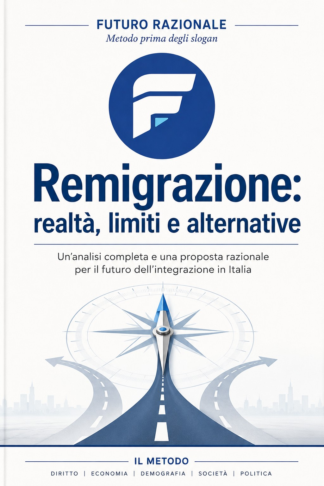

Manifesto per un Futuro Razionale
Una visione sintetica e concreta per ragionare sul futuro dell'Italia oltre le contrapposizioni ideologiche.
Link Amazon da inserireMETODO PRIMA DEGLI SLOGAN
Uno spazio indipendente di analisi, confronto e proposte per affrontare con razionalità le sfide del nostro tempo.
IL MANIFESTO
Futuro Razionale nasce dall'idea che i problemi complessi non possano essere risolti con slogan semplici. Dati, pragmatismo, responsabilità e capacità di mettere in discussione le proprie convinzioni sono il punto di partenza.
Scopri il progetto →PUBBLICAZIONI
Una visione sintetica e concreta per ragionare sul futuro dell'Italia oltre le contrapposizioni ideologiche.
Link Amazon da inserire
Un'analisi del tema della remigrazione, delle sue criticità e delle possibili alternative.
Link Amazon da inserireLABORATORIO DELLE IDEE
FUTURO RAZIONALE
Un progetto culturale aperto al confronto, nato per trasformare problemi, dati e idee in proposte comprensibili e verificabili.
CONTATTI
Questa è la prima versione del sito. Qui potremo inserire email, social e newsletter quando deciderai quali canali rendere pubblici.